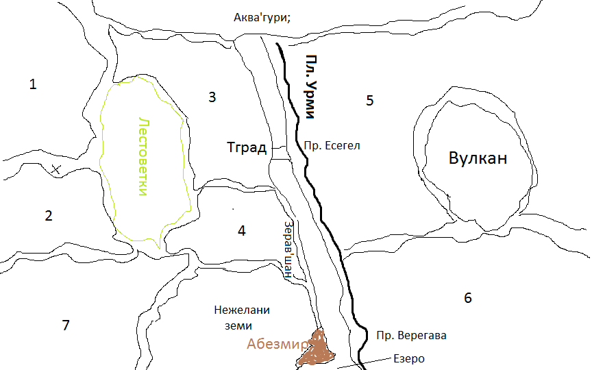

Main Characters Preview
- Woman warrior, teacher in martial arts, guiding the main character, expert in applying
special martial art,
sister of the villain of the story, both being bregins - legend. - Woman villain, born as part of a dragon' spirit and the collapse with Great Stone.
- Big ice dragon - legend for the big ice dragon and the begging of the ice tribes
- Surreal creature - creature made from the remainings of dead dragon, ability to absorb special
life energy* from other
beings, it has other special ability too * - Forest Dragon - main character in the dragons, extremely agile, expert in warfare, balanced
- Black dragon, last of it's kind, servant to the Bad guy in the story name* (who is not bad guy actually, but spoilers).
- First Water dragon - legend of the apperiance of the first aquamarry dragons and their abilities to control the forms of water.
- Forefather Dragon - ancient dragon, ancestor of all dragons from Bulgarian Mythology, patron of kin Dulo.
World Building
The action takes place in fiction world between Earth and Swellors' Home World
Because of the stuck in space land, there is a lot of discrepancy between tribes land,
sudden changes in weather, hurricanes and country sites. A lot of the Swellors World nature
is presented, enormous Highlands, mountain fjords. Used many names from the Bulgarian and slavian
Mythology.
World Map |
Another important aspects of WB:
|
Chars Advancment
- Woman warrior, introvert, outsider, big emotional dept, hard to stand by
Middle part, more open to the main character and her friends, End Part, emotional ready to fight for her love - Villain Woman - character holder of the evil in the story, in the end becomes good like Gandalf the white
- Gandalf like wizzard
- Angry support character - like Hulk type
- Forest Dragon - Balanced chartr with wisdom holding the dragon look in the story, in the
Middle part, loses her paw and got mad running from the main pack. Latter in the story will regain her
sanity and her paw by spell. During the Path will find herself in new amazing way along with the other characters. - Big Bad Black dragon under the rule of Bad guy*, blinded from bloodthurst and warmongery. Later in the story during the battle with Good Guy, he got awaken and re-connect with his true self which is good. In second part of Middle story BBB dragon will be retaken from Bad guy dominance. In the end, the good, however will manage to preveil. BBB dragon will get in relationship with Other main dragon.
- The Hand
- Ancient Dragon -
Engaged Topics
1. Dragons and the world2. Characters struggle for understanding the problems
3. Philosophy and it's aspects
4. Human will and mind shaping the reality.
5. Freedom of spirit and mind.
6. True Reality
7. Utopia without lies.
8. Pros and Cons for Societies with present thinking and future/past thinking.